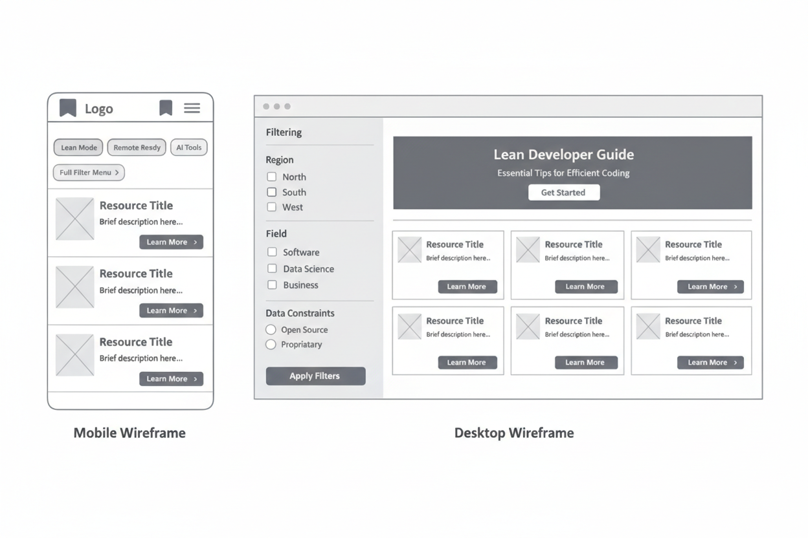

Site Planning Document
From Local Fundamentals to FAANG Elite
Site Name & Purpose
Name: GlobalDev Roadmap
Purpose: To empower South African developers with high-weight international resources while optimizing for local infrastructure challenges through "Lean Development" principles.
Color Schema & Typography
Our design follows the 60-30-10 rule for visual balance:
- 60% Dominant: #F8F9FA (Backgrounds)
- 30% Secondary: #1B263B (Structure/Headers)
- 10% Accent: #FF4D00 (Interactions/CTA)
Fonts: Inter (Headings) provides a modern tech feel, while Roboto (Body) ensures maximum readability across devices.
Wireframes
Low-fidelity layout plan for desktop and mobile responsiveness.
